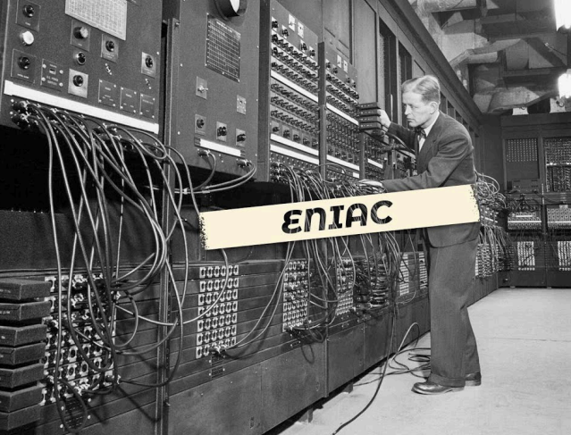
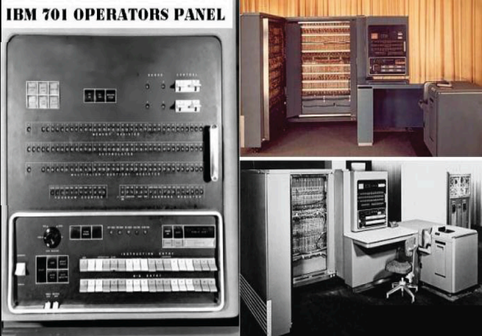
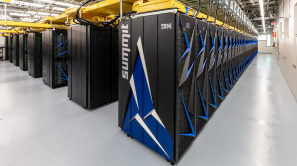
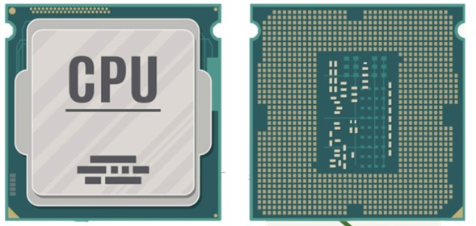

1.1 Modelos de Arquitectura
Modelos de Arquitectura Clasica
Son las más antiguas y tradicionales. Se basan en un solo procesador que ejecuta las instrucciones de manera secuencial.● Características:
○ Un procesador central (CPU).
○ Ciclo de instrucción clásico: buscar → decodificar → ejecutar → almacenar.
○ No hay paralelismo; una instrucción debe terminar antes de iniciar la siguiente.
● Ejemplo:
○ La arquitectura Von Neumann (tanto datos como instrucciones comparten la misma memoria).
○ Las primeras computadoras como la ENIAC o la IBM 701.
● Ventaja: Simplicidad de diseño.
● Desventaja: Lento al no poder ejecutar varias instrucciones a la vez.


Modelos de Arquitectura Segmentada
Las instrucciones se dividen en etapas, y varias pueden ejecutarse de forma superpuesta, como en una línea de producción.● Características:
○ Se utiliza la técnica de pipeline.
○ Ejemplo de etapas:
○ buscar → decodificar → ejecutar → memoria → volver a escribir.
Aumenta la velocidad porque mientras una instrucción se ejecuta, otra puede estar siendo decodificada, y otra siendo buscada en memoria.
● Ejemplo:
○ Procesadores RISC (como los ARM o MIPS).
○ Procesadores Intel y AMD modernos usan pipelines con muchas etapas.
● Ventaja: Mayor rendimiento sin necesidad de duplicar procesadores.
● Desventaja: Problemas de “atascos” (hazards) si una instrucción depende de otra.
Modelos de Arquitectura Multiprocesamiento
Se usan varios procesadores o núcleos que trabajan en paralelo para resolver múltiples tareas o una tarea más rápido.
● Características:
○ Pueden ser SMP (multiprocesamiento simétrico, todos los procesadores comparten la misma memoria) o MPP (masivamente paralelos, cada procesador tiene su propia memoria).
○ Capacidad de ejecutar hilos e instrucciones en paralelo.
○ Muy usadas en servidores, supercomputadoras y PCs multicore.
● Ejemplo:
○ Procesadores modernos de 4, 8, 16 núcleos (Intel i7, Ryzen).
○ Supercomputadoras como Summit o Fugaku que usan miles de procesadores.
● Ventaja: Mucho mayor rendimiento y capacidad de procesamiento.
● Desventaja: Complejidad en la sincronización y programación paralela.

1.2 Analisis de Componentes
1.2.1 Unidad Central de Procesamiento (CPU)
Unidad Central de Procesamiento
Cpu es la abreviación de unidad central de procesamiento, un componentebásico de todo dispositivo que procesa datos y realiza cálculos matemáticos-informáticos. En primer lugar, es el encargado de recibir e interpretar datos y ejecutar lassecuencias de instrucciones a realizar por cada programa valiéndose de operaciones aritméticas y matemáticas. El cpu interpreta todos los datos que provienen del dispositivo, tanto de los programas como la información que envía el usuario a través de aplicaciones. Además, controla el buen funcionamiento de cada componente del sistemapara que todas las acciones sean realizadas en tiempo y forma.
Unidad Aritmetica Logica
La alu (unidad aritmética lógica) es un circuito electrónico cuya función es ejecutar todos los procesos relacionados con los procedimientos de lógica y cálculo numérico. Figura como un componente indispensable de la unidad central de procesamiento (cpu) de las computadoras la alu realiza primordialmente operaciones lógicas y matemáticas, incluyendo las operaciones de desplazamiento de bits. Estos son procesos fundamentales que se deben ejecutar en casi todos los datos que procesa la cpu. La unidad aritmética lógica es ese componente de la cpu que ejecuta todos los cálculos que la cpu pueda necesitar. Es la parte “calculadora” de la computadora, ya que realiza las operaciones aritméticas y lógicas básicas. Gran parte de los procedimientos son de índole lógica. Acorde al diseño que tenga la alu, se le podrá dar a la cpu mayor potencia. Sin embargo, hará también que gaste más energía y produzca más calor.
Registros
Los registros son componentes esenciales de la unidad de control y la unidad lógica aritmética (alu) del cpu. Almacenan información temporalmente para facilitar las operaciones del cpu. Se dividen en:Registros de segmento de memoria: almacenan direcciones de memoria donde
Registros de propósito general: almacenan los datos con los que se trabaja. residen los datos.
Registros de instrucciones: controlan el estado del cpu.
Buses
Un bus es un conjunto de cables que permite la comunicación entre dispositivos hardware.Bus de datos: Transporta los datos entre los componentes del sistema.
Bus de control: almacenan los datos con los que se trabaja. residen los datos.gobierna el acceso a los buses de datos y direcciones, evitando colisiones.
Bus de direcciones: indica la dirección de memoria del dato en tránsito.
1.2.2 Memorias
Memoria Principal
La memoria principal (también llamada ram / memoria de acceso aleatorio) es el lugar donde el procesador guarda de forma temporal los datos y programas que está utilizando en ese momento.
● Características Principales:
○ Volátil: se borra al apagar el equipo.
○ Alta velocidad: permite acceso rápido a los datos para que el procesador no se detenga.
○ Capacidad: se mide en gb (ej. 8 gb, 16 gb, 32 gb).
○ Función: sirve de “espacio de trabajo” para ejecutar programas y procesos.
● Ejemplo:
Cuando abres un navegador y varias pestañas, esas páginas y procesos están cargados en la memoria ram para que puedas usarlos rápido.
Cache
La caché es una memoria muy rápida y de poca capacidad que se encuentra dentro o muy cerca del procesador. Su función es guardar datos e instrucciones que la cpu usa con frecuencia, para no tener que ir a buscarlos a la ram (que es más lenta).
● Características Principales:
○ Mucho más rápida que la ram, pero también mucho más cara.
○ Capacidad reducida, medida en kb o mb (ej. 256 kb, 8 mb, 32 mb).
○ Jerarquías:
□ L1: la más rápida, está dentro del núcleo del procesador (muy pequeña).
□ L2: un poco más grande, algo más lenta.
□ L3: compartida entre varios núcleos, mayor capacidad, más lenta que l1 y l2.
● Ejemplo Sencillo:
Imagina que la cpu es un estudiante haciendo tarea:
○ Caché = los apuntes que tiene justo enfrente (acceso inmediato).
○ Ram = la mochila con los libros (acceso rápido, pero no inmediato).
○ Disco duro/ssd = la biblioteca (mucho más lento).
1.2.3 Sistemas E/S (Entrada/Salida)
Sistemas de Entrada y Salida
Los sistemas de entrada y salida (E/S) son las interfaces y dispositivos que permiten la comunicación entre un sistema informático y su
entorno, ya sea el usuario u otros sistemas. Los
dispositivos de entrada introducen datos e
información en la computadora (teclado, ratón)
y los dispositivos de salida presentan el
resultado de las operaciones (monitor,
impresora). También existen dispositivos de E/S
mixtos que realizan ambas funciones, como las
unidades de almacenamiento y las pantallas
táctiles.
Dispositivos de Entrada: Son aquellos que permiten al usuario ingresar datos e instrucciones al sistema.
Ejemplos: teclado, ratón, micrófono,
escáner, cámara web, joystick.
Dispositivos de Salida: Son los que muestran al usuario el resultado del procesamiento de datos.
Ejemplos: monitor, impresora,
altavoces, auriculares, proyectores.
Dispositivos de entrada/salida (mixtos): son dispositivos que pueden tanto recibir información como enviarla.
Ejemplos: pantallas táctiles: permiten la entrada de datos tocando la pantalla y muestran información en ella.
Entradas y Salidas Programadas
La entrada y salida programada (E/S programada) es un método de
transferencia de datos donde la CPU verifica activamente y controla la
comunicación con un dispositivo periférico para leer o escribir datos. En
este método, la CPU realiza "polling", es decir, consulta repetidamente al dispositivo para saber si está listo o si ha habido una entrada, consumiendo recursos de manera ineficiente ya que la CPU debe esperar y verificar el estado del dispositivo.
Funcionamiento:
● Verificación de la CPU:
La CPU ejecuta instrucciones que consultan al módulo de entrada/salida o al periférico para determinar si están listos para recibir o enviar datos.
● Espera activa:
Si el dispositivo no está listo, la CPU espera y vuelve a verificar la condición, repitiendo este proceso hasta que la operación se complete.
● Transferencia de datos:
Una vez que el dispositivo está listo, la CPU instruye la transferencia de datos desde o hacia el dispositivo.
● Ineficiencia:
Este método es ineficiente porque la CPU pasa mucho tiempo esperando y verificando el estado del dispositivo, en lugar de ejecutar otras tareas.
Entradas y Salidas Mediante Interrupciones
La entrada/salida (E/S) mediante interrupciones es un mecanismo donde un dispositivo periférico notifica a la CPU (Unidad Central de
Procesamiento) que necesita atención, generando una interrupción
que suspende la ejecución del programa principal. La CPU, al aceptar
la interrupción, guarda el estado de su programa y ejecuta una
rutina de servicio para gestionar la transferencia de datos con el
periférico. Al finalizar, la CPU recupera su estado y reanuda el
programa interrumpido, lo que permite a la CPU realizar otras tareas
mientras espera la actividad de los periféricos.
Funcionamiento:
● Generacion de la interrupcion:
Cuando un periférico (como un teclado o disco duro) está listo para transferir datos o necesita una operación, emite una señal de interrupción a la CPU a través de una línea especial de hardware.
● Comprobacion y aceptacion:
Después de ejecutar cada instrucción, la CPU verifica si se ha producido una interrupción. Si se detecta una, la CPU la acepta, deteniendo el programa actual.
● Salvar Estado:
Antes de atender la interrupción, la CPU guarda el estado actual del programa, incluyendo el contador de programa y los registros, para poder reanudarlo correctamente más tarde.
● Ejecucion de la rutina de servicio:
La CPU salta a una rutina de servicio predefinida (también llamada manejador de interrupciones) que se encargará de la operación de E/S necesaria, como leer datos del teclado o escribir en un disco.
● Recuperacion del estado:
Una vez que la rutina de servicio termina de realizar la transferencia de datos, la CPU recupera el estado guardado y continúa la ejecución del programa original.
Acceso Directo a Memoria
El acceso directo a memoria (DMA) es una característica de los sistemas informáticos que permite a los componentes de hardware (como dispositivos periféricos) acceder y transferir datos directamente desde la memoria principal del sistema (RAM) sin la intervención constante de la unidad central de procesamiento (CPU). Esta técnica descarga a la CPU de la tarea de gestionar las transferencias de datos, lo que aumenta la velocidad del sistema y mejora el rendimiento general, permitiendo que la CPU se dedique a otras tareas de computación.
Canales y Procesadores
Los canales y los procesadores de entrada/salida (E/S) son componentes informáticos que trabajan juntos para gestionar la comunicación entre la CPU y los dispositivos periféricos, como el teclado, el monitor o la impresora. Los canales de E/S actúan como vías de comunicación dedicadas que conectan la CPU con los dispositivos, mientras que los procesadores de E/S son procesadores auxiliares que se encargan de realizar las operaciones de E/S, dirigiendo el flujo de datos y aliviando la carga de la CPU principal para mejorar el rendimiento del sistema.
1.2.4 Buses
Tipos de Buses
1.-Segun la funcion que realizan (Buses logicos)
Estos son los tres componentes principales del bus del sistema, que trabajan juntos para la comunicación interna de la computadora.● Bus de datos: Es un canal bidireccional por el que se mueven los datos entre los distintos componentes (CPU, memoria, dispositivos de E/S). El "ancho de banda" del bus de datos (la cantidad de líneas que tiene) determina la cantidad de datos que puede transmitir a la vez. Por ejemplo, un bus de 64 bits puede transferir 64 bits de datos simultáneamente.
● Bus de direcciones: Es un canal unidireccional (los datos fluyen en una sola dirección) que transporta las direcciones de memoria o de los dispositivos con los que la CPU desea comunicarse. El ancho de este bus determina la cantidad de memoria que el procesador puede direccionar.
● Bus de control: Es un bus que transporta señales de control y estado para gobernar el uso y el acceso a los buses de datos y de direcciones. Permite sincronizar las operaciones y evita conflictos cuando varios dispositivos intentan usar los buses al mismo tiempo. Las señales de control pueden ser de lectura de memoria, escritura de memoria, interrupciones, etc.
2.-Segun el tipo de conexion
● Bus paralelo: Transfiere varios bits de datos de forma simultánea a través de múltiples líneas o cables. Son ideales para distancias cortas, pero pueden sufrir de interferencias a medida que la longitud del cable aumenta.Ejemplos incluyen los buses antiguos ide y pata.
● Bus serie (o serial): Transfiere los datos bit a bit a través de un único canal. Aunque a primera vista parezca más lento, las altas frecuencias de reloj y la menor interferencia en distancias largas permiten a los buses seriales modernos superar en velocidad a los paralelos.
Ejemplos actuales son elusb, sata y pcie.
3.-Segun su ubicacion o aplicacion
● Bus interno (o del sistema): Conecta los componentes principales dentro de la computadora, como el procesador y la memoria ram.Un ejemplo histórico es el front-side bus (fsb).
● Bus externo (o de expansion): Conecta la computadora con dispositivos ytarjetas adicionales.
Se encuentran en las ranuras de la placa base y algunos ejemplos son:
○ pcie: bus moderno y rápido para tarjetas gráficas y ssds.
○ Usb: estándar para conectar periféricos externos como teclados y ratones.
○ Sata: se usa para conectar dispositivos de almacenamiento como discos duros y ssds.
○ Agp: un bus antiguo, específico para tarjetas gráficas, ahora obsoleto.
Estructura de Buses
● Bus de datos:
Este es el canal por donde se transmiten los datos reales entre los módulos del sistema (CPU, memoria, etc.). El "ancho del bus" se refiere al número de líneas que lo componen y determina cuántos bits puede transferir a la vez. Por ejemplo, un bus de 64 bits puede mover 64 bits de datos simultáneamente, lo que influye directamente en el rendimiento.
● Bus de direcciones:
Este es un canal unidireccional que transporta las direcciones de memoria o de los dispositivos de E/S. La CPU usa este bus para especificar la ubicación exacta de donde leer o escribir datos. El ancho del bus de direcciones determina la cantidad máxima de memoria que el sistema puede direccionar.
● Bus de control:
Este bus transporta señales de control y estado. Su función es gestionar el uso de los buses de datos y de direcciones para evitar conflictos. Las señales de control incluyen comandos como "lectura de memoria", "escritura de E/S", y otras que sincronizan las operaciones entre los diferentes componentes. Estos tres buses trabajan en conjunto para asegurar una transferencia de información eficiente y organizada.
Jerarquia de Buses
La jerarquía de buses es una organización de múltiples buses con diferentes velocidades para optimizar el rendimiento y evitar "cuellos de botella". En lugar de un solo bus, las computadoras utilizan una estructura con varios niveles:
● Buses de alto rendimiento:
Para componentes críticos y de alta velocidad cerca del procesador.
● Buses del sistema:
Interconexión central que conecta los buses de alto rendimiento y los de expansión.
● Buses de expansion:
Para dispositivos periféricos más lentos, conectados al bus del sistema a través de adaptadores.